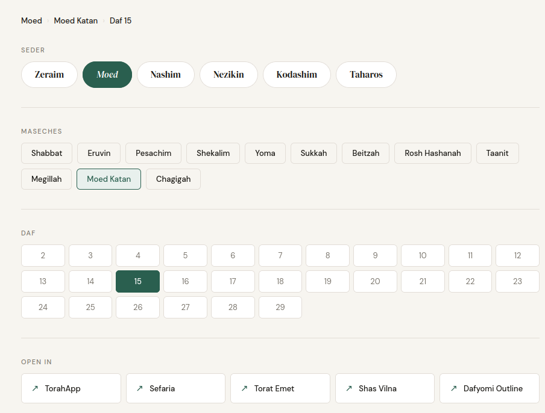
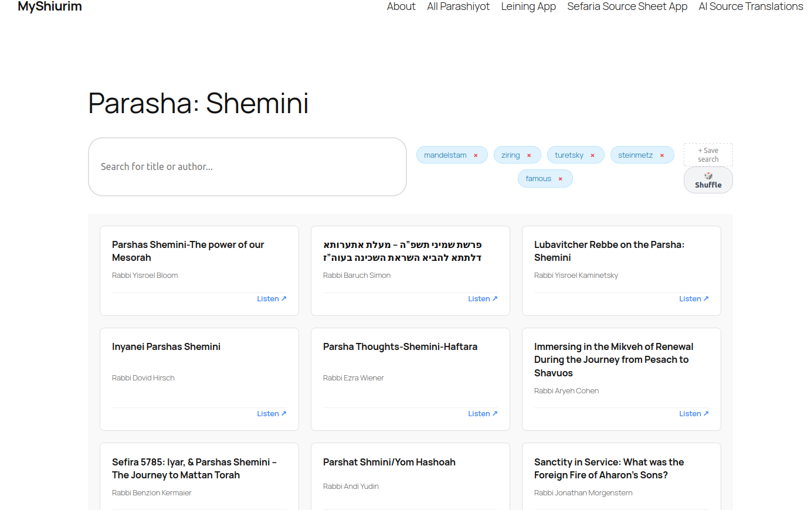
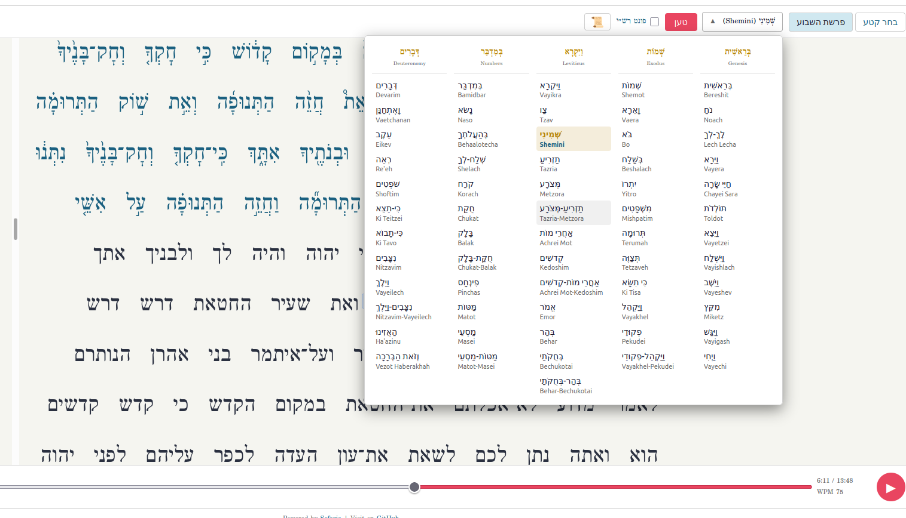
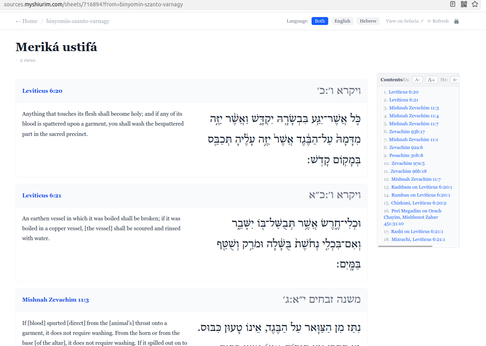
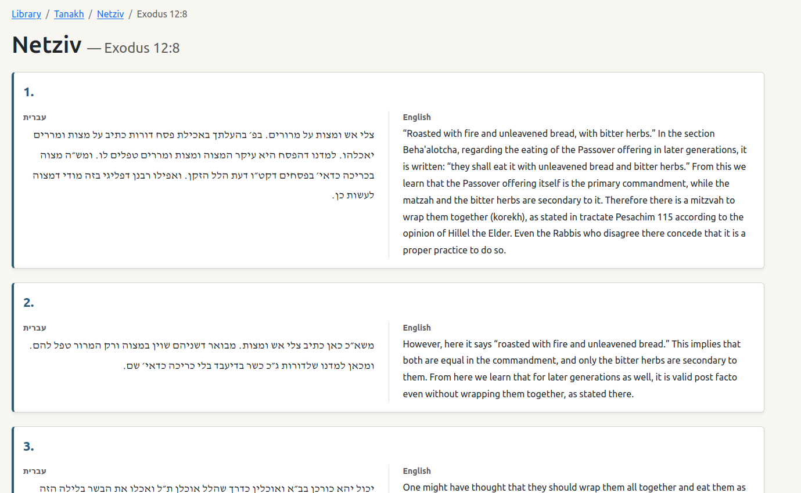

Building digital tools for the world of Torah learning
I write software that makes it easier to learn, access, and engage with Jewish texts — combining modern web technologies with the timeless depth of Torah scholarship.
About
I'm a rabbi and a developer with a passion for making Torah learning more accessible through thoughtful software. My projects live at the crossroads of Jewish scholarship and modern web development — tools built not to replace the experience of learning, but to open its doors a little wider.
Whether it's a better way to navigate the Gemara, a faster path to parasha shiurim, or an AI-assisted gateway into Sefaria's vast library — each project starts with a real need in the Jewish learning community.
I build with JavaScript, React, and modern web APIs, with a preference for tools that are fast, simple, and genuinely useful.
Projects

Fast-access browsing to any daf across five different online Gemara sources — including Torat Emet, Sefaria, and the Dafyomi Kollel outline. One click, any masechta, any view.

A curated hub for accessing parasha shiurim from many teachers in one place. Organized by sedra and moed, with simple, distraction-free browsing.

An interactive tool for practicing Torah reading (leining), designed to help ba'alei keriah prepare their parasha efficiently and accurately. Features include a Sefer Torah view and Rashi script read practice.

A cleaner, simplified interface for browsing Sefaria source sheets by username or sheet ID — cutting through the clutter to focus on the texts themselves, built for my own shiurim for more effective screen sharing.

An alternative library offering ChatGPT-powered translations of Sefaria texts — making classical sources accessible to learners at every level of Hebrew proficiency.
Skills & Stack
Get in Touch
If you're working on something at the intersection of Torah and technology, or you're looking for a developer who deeply cares about Jewish learning — I'd love to hear from you.